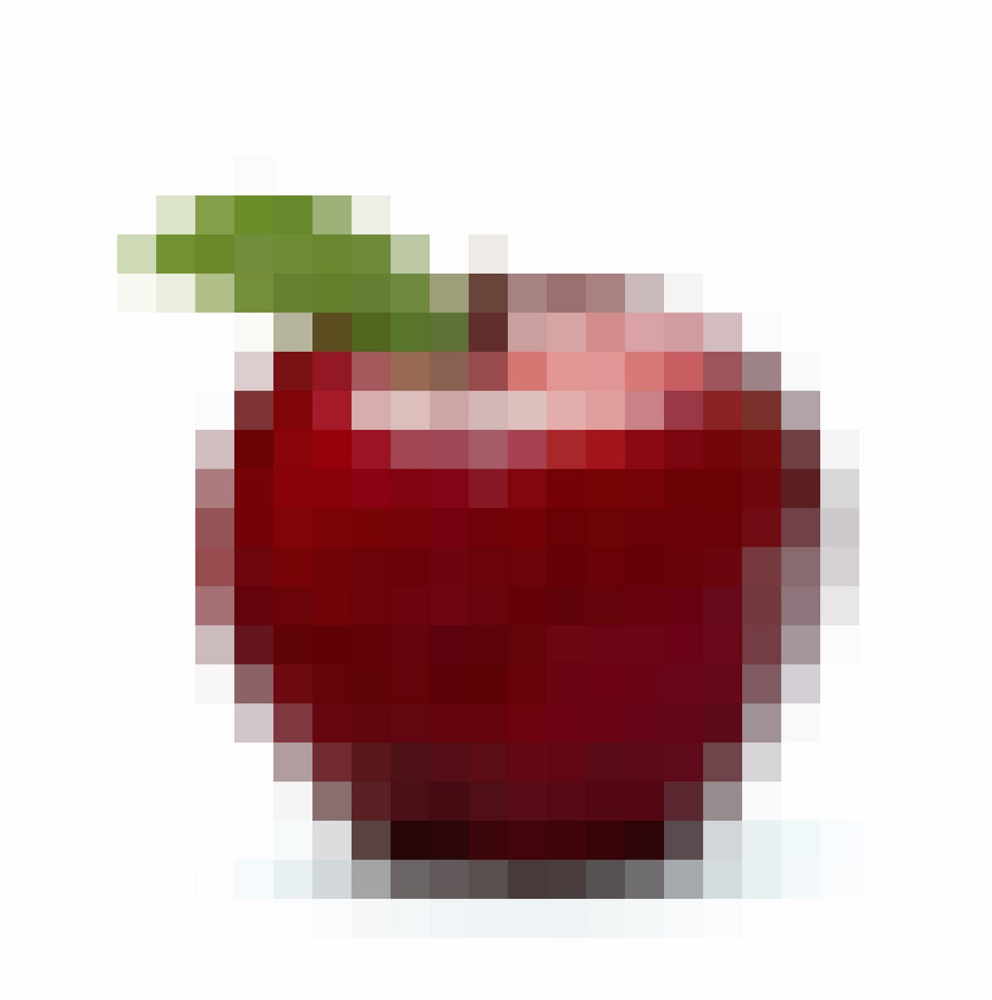
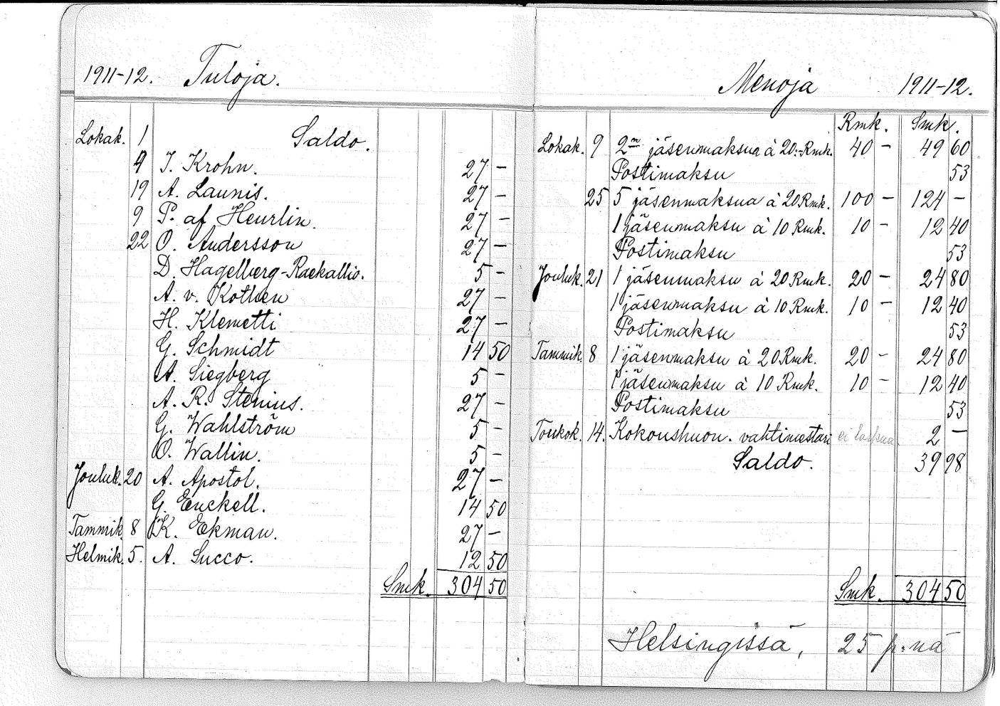
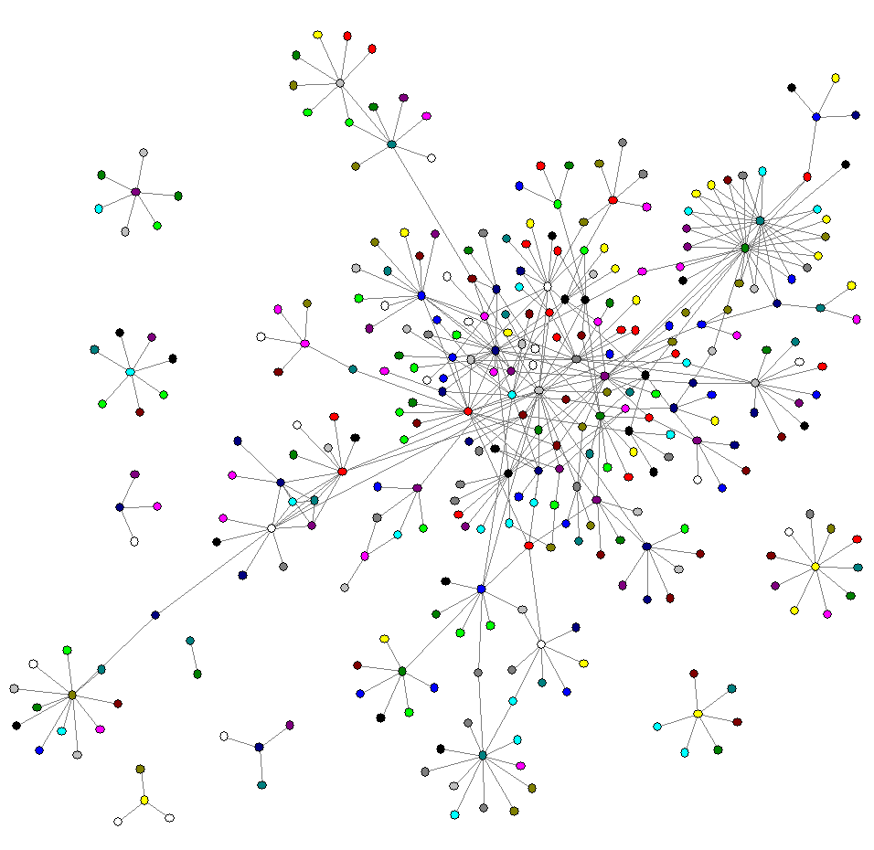

Jos vieläkin mietit, mikä ihmeen Bitcoin, tämä teksti on sinulle.
On hieno päivä ja minä istun kanssasi puistonpenkillä.
Minulla on yksi omena, jonka ojennan sinulle.
Nyt sinulla on omena ja minulla ei ole.
Yksinkertaista, eikö vain?
Katsotaampa tarkemmin, mitä juuri äsken tapahtui:
Omenani siirtyi fyysisesti sinulle. Sinä tiedät, että näin tapahtui, koska olimme molemmat puiston penkillä ja annoin sinulle konkreettisesti omenan.
Emme tarvinneet tähän siirtoon kolmannen osapuolen apua. Selvisimme ilman Heikki Salon todistamista (joka tunnettu asianajaja).
Nyt omena on sinun! En voi antaa sinulle enempää omenoita, koska minulla ei ole yhtään jäljellä. Enkä kontrolloi antamaani omenaa enää, se on sinun. Luovutin omenan omistusoikeuden sinulle, nyt sinä kontrolloit sitä. Voit tehdä omenalle täsmälleen mitä haluat, voit antaa sen kaverillesi, joka voi taas antaa omenan eteenpäin hänen kaverilleen jne..
Tapahtunutta kutsutaan henkilökohtaiseksi vaihtokaupaksi. Mielestäni on täysin sama annanko sinulle banaanin, omenan, kirjan tai 5 euron setelin….
Nyt menen asioiden edelle.

Tällä kertaa minulla on yksi digitaalinen omena. Tässä saat digitaalisen omenani.
Ahaa! Nyt vaihtokauppa menee mielenkiintoiseksi.
Mistä tiedät, että juuri se antamani digitaalinen omena on nyt vain ja ainuastaan sinun hallussa? Mietippä tätä hetki.
Tilanne on nyt paljon monimutkaisempi eikö vain? Mistä tiedät, että en lähettänyt omenaa ensin sähköpostin liitetiedostona Heikki Salolle tai kaverilleni Penalle?
Ehkä satuin ottamaan muutaman kopion digitaalisesta omenastani läppärille. Ehkä jaoin sen Piratebayssa ja miljoonat ihmiset latasivat sen itselleen.
Kuten huomaat, digitaalinen vaihtokauppa on hieman ongelmallisempi. Digitaalisen omenan lähettäminen ei vastaa fyysisen omenan antamista.
Muutama fiksu nörtti on pystynyt nimeämään tämän ongelman: sitä kutsutaan ‘double-spending’ -ongelmaksi — (kaksinkertaisen käytön ongelma). Älä huoli, sinun tarvitsee vain tietää, että kyseinen ongelma on hämmentänyt näitä nörttejä jo jonkin aikaa löytämättä siihen ratkaisua.
Kunnes…
Mutta yritetäänpä yhdessä miettiä siihen ratkaisua.

Ehkä näitä digitaalisia omenia täytyy seurata kirjanpidolla. Tilikirja sisältää kaikki transaktiot (transaktio = yksittäinen liiketapahtuma = siirto) ja tätä kokonaisuutta kutsutaan kirjanpidoksi.
Kun tämä tilikirja tai kirjanpito on digitaalinen, sen täytyy pyöriä omassa maailmassaan ja se kirjanpito tarvitsee jonkun päivystämään, sekä ylläpitämään sitä.
Esimerkiksi. World of Warcraft. Blizzard, tiimi, joka loi kyseisen online-pelin, pitää hallussaan ”digitaalista kirjanpitoa kaikista harvinaisista esineistä, joita heidän pelissään on. mahtavaa -Löysimme ratkaisun!
Tässä on kuitenkin muutamia ongelmia:
Mitä jos Blizzardin työntekijä tekee näitä esineitä lisää? Hän voisi koska vain lisätä digitaalisia omenoita hänen saldoihinsa!
Se ei ole täysin sama asia, kuin meidän vaihtokauppa puiston penkillä. Silloin olimme vain kahdestaan. Blizzardin kautta käyty vaihtokauppa on kuin repisimme Heikki Salon oikeussalista puiston penkille välittämään kaikkia meidän vaihtokauppoja (transaktioita). Kuinka voisin antaa digitaaliset omenani sinulle, niin kuin normaaliin tapaan?
Onko mitään tapaa jäljitellä puistonpenkin tapahtumaa, meidän välistä vaihtokauppaa (transaktiota) digitaalisesti? Vaikuttaa aika vaikealta…

(kuva)
Mitä jos annamme tämän kyseisen tilikirjan kaikille? Blizzardin tietokoneiden sijasta, tilikirja elää kaikkien halukkaiden tietokoneilla. Alusta alkaen kaikki digitaalisten omenien vaihtokaupat (transaktiot) tallentuvat tähän.
Sitä ei voi huijata! Minä en voi lähettää sinullä yhtään digitaalista omenaa, joita minulla ei ole. Silloin tilikirja ei synkronoituisi muiden hallussapitämien tilikirjojen kanssa. Se olisi vaikea järjestelmä päihittää, erityisesti, jos tämä järjestelmä kasvaisi todellä isoksi.
Lisäksi tilikirja ei ole yhden ihmisen kontrolloitavissa. Täten tiedän, ettei kukaan pysty luomaan itselleen lisää digitaalisia omenoita. Tämän järjestelmän säännöt määriteltiin heti alussa järjestelmän luonnin yhteydessä. Ja koodijärjestelmä ja säännöt ovat avointa lähdekoodia — tiedäthän, niin kuin käyttöjärjestelmä, jota äitisi Android älypuhelin käyttää. Tai vähän niin kuin Wikipedia. Se on fiksujen ihmisten ylläpidettävänä, turvattavana, kehitettävänä ja tarkistettavana.
Voit osallistua tähän verkostoon, voit päivitellä tilikirjaa ja täten varmistaa sen toimivuutta. Vaivannäöstä voit saada 25 digitaalista omenaa palkkioksi. Itse asiassa, se on ainut tapa luoda lisää digitaalisia omenoita tähän järjestelmään.
… Mutta selittämäni järjestelmä on olemassa. Sitä kutsutaan Bitcoin-protokollaksi. Ja nämä digitaaliset omenat ovat ”bitcoineja” tämän järjestelmän sisällä. Nerokasta!
Mutta mitä avoin tilikirja mahdollistaa?
1) Muistatko, että se pohjautuu avoimeen lähdekoodiin? Omenoiden kokonaismäärä (lopullinen määrä) on määritelty avoimeen tilikirjaan sitä luodessa. Minä tiedän tämänhetkisen tarkan olemassaolevan määrän. Tiedän järjestelmässä olevien omenoiden määrän olevan rajallinen (niukka).
2) Vaihtokaupan jälkeen, tiedän omenoiden todistettavasti siirtyneen minun omistuksesta sinun omistukseen. En kyennyt sanomaan tätä digitaalisista asioista. Siirrot varmistetaan ja todennetaan tilikirjasta ja sitten päivitetään kyseiseen, julkiseen, tilikirjaan.
Koska tilikirja on julkinen, en tarvinnut Heikki Saloa (kolmatta osapuolta) varmistamaan, että en huijannut tai luonut ylimääräisiä kopioita itselleni tai lähettänyt omenoita kahdesta tai kolmesti…
Järjestelmässä digitaalisten omenoiden vaihtokauppa on kuin fyysisen kiven omistuksen vaihtuminen. Se on yhtä pätevä, kuin nähdessä fyysisen omenan tippuvan kädestäni sinun taskuun. Ja niin kuin puistonpenkillä, tähän vaihtokauppaan osallistui vain kaksi ihmistä. Minä ja sinä — me emme tarvinneet Heikki Saloa varmistamaan ja todistamaan puiston vaihtokauppaa.
Toisin sanoen Bitcoin-protokolla käyttäytyy kuin fyysinen esine.
Tiedätkö mikä on hienoa? Bitcoin-protokolla on siitä huolimatta digitaalinen. Me voimme diilata 1,000 omenaa, miljoona omenaa tai vaikkapa 0.0000001 omenaa. Voin lähettää kyseisen määrän vain yhdellä hiiren klikkauksella ja voin ojentaa sen digitaaliseen taskuusi vaikka olisin Nigeriassa ja sinä olisit matkalla New Yorkiin.
Minä voin jopa tehdä muita digitaalisia siirtoja tämän digitaalisen omenan sisällä! Kaikki on kuitenkin digitaalista. Ehkä voin lisätä jotain tekstiä siihen — digitaalisen viestin, tai ehkä voin liittää paljon tärkeämpiä asioita siihen esim: sopimuksen, osakekirjan tai henkilökortin..
Tämähän on mahtavaa! Kuinka meidän tulisi käsitellä näitä ”digitaalisia omenoita”? Ne ovat varsin hyödyllisiä, eivätkö olekin?
Monet kinastelevat siitä tälläkin hetkellä, on kiivasta keskustelua tämän ja tuon taloustieteen koulukunnan, poliitikkojen ja ohjelmoijien välillä. Älä kuitenkaan kuuntele niitä kaikkia. Osa ihmisistä on viisaita, osa harhaanjohtavia. Osa sanoo järjestelmän arvon olevan pilvissa ja osa sanoo sen olevan arvoton. Joku antaa konkreettisen arvon: $1,300 omenalta. Jotkut sanoo sen olevan digitaalista kultaa, jotkut kutsuvat sitä valuutaksi. Muut sanovat niitä vain tulppaaneiksi (Tulppaanimania). Jotkut sanovat sen mullistavan maailmaa, jotkut sanovat sitä vain villitykseksi.
Minulla on oma mielipide siitä.
Se tarina jää kuitenkin toiseen kertaan.
Nyt kuitenkin tiedät enemmän Bitcoinista, kuin useimmat.
Kirjoittanut Nik Custodo. Vapaasti suomentanut Andre Juselius. Teos on public domainia - sitä saa vapasti muokata ja levittää.